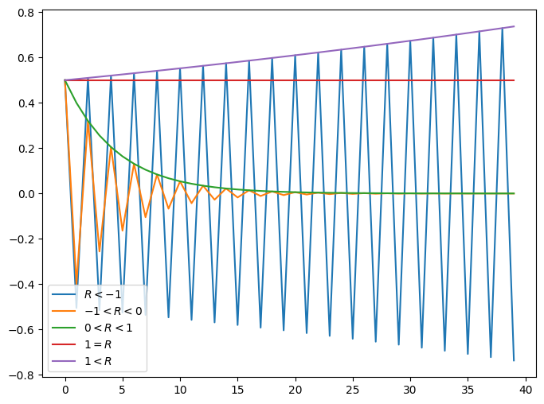
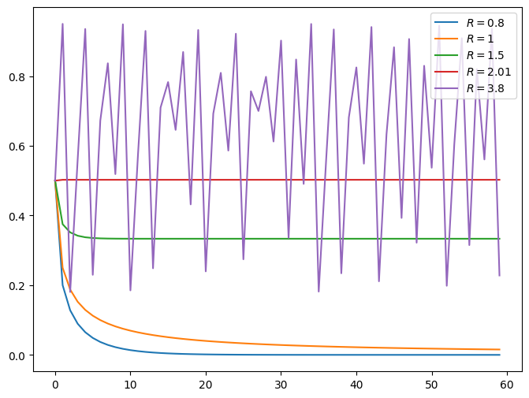
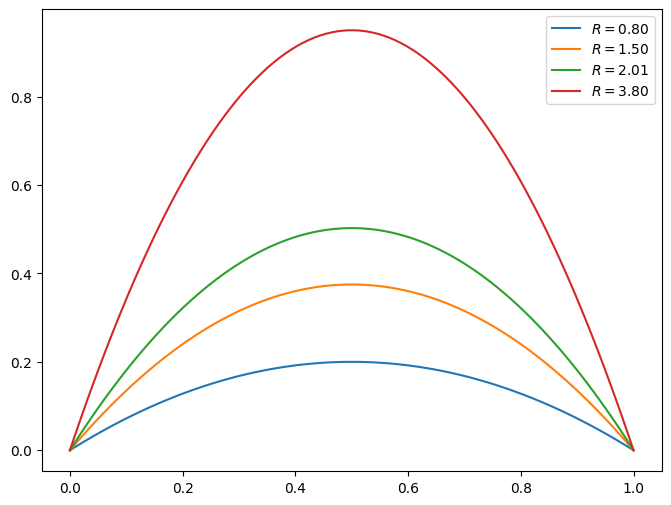
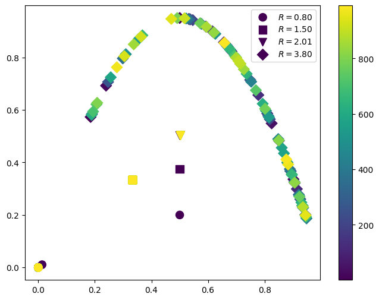
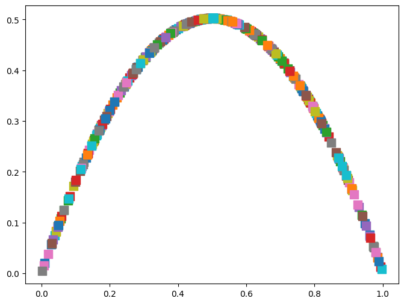
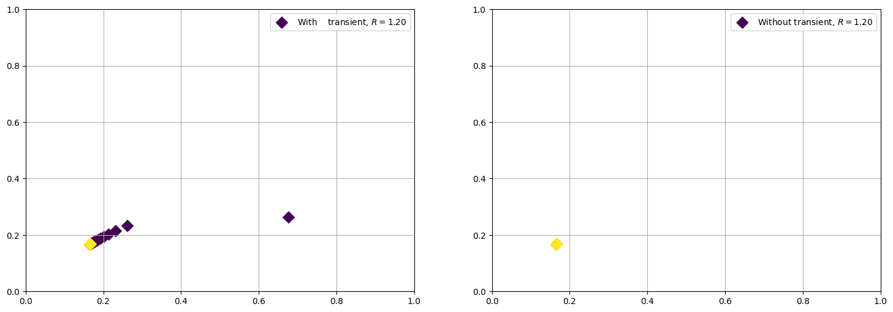
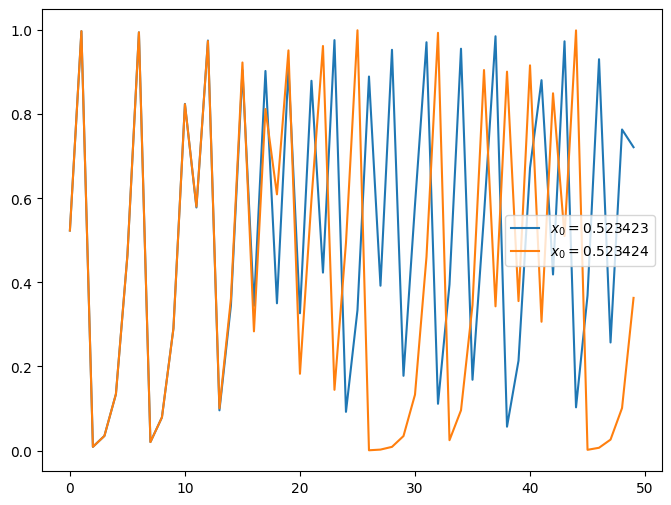

Non-linear dynamics and chaos#
Finite-difference equations#
(Based on Understanding Non-linear Dynamics, Kaplan; and Nonlinear Dynamics and Chaos, Strogatz)
A finite difference equations allows to obtain the new value for a given variable, from the current value, as a function of discrete time steps. This functional relationship can be written as
where the function \(f\) characterizes the mapping. Sometimes, \(x_{t+1}\) is denoted as \(x'\).
For example, let’s assume a linear equation, \(x_{t+1} = Rx_{t}\), where is a constant. What is the solution of this equation?. In this case the solution is easily obtained, and for a given initial condition \(x_0\) you have \(x_{t+1} = R^{t+1} x_0\). Therefore, the solutions behaviour is completely encoded in the parameter \(R\). You will see that a very rich dynamics can be spanned by the given parameters. You have the following possible solutions, as function of time:
%matplotlib inline
import matplotlib.pyplot as plt
import numpy as np
N = 40
def iterate(data, R):
for ii in range(1, N):
data[ii] = R*data[ii-1]
# Iteration settings
t = np.arange(0, N)
xdata = np.zeros(N)
xdata[0] = 0.5
# plot settings
fig, ax = plt.subplots(figsize=(8,6))
# Maps for several values of R
R = -1.01
iterate(xdata, R)
plt.plot(t, xdata, label=r'$R < -1$')
R = -0.8
iterate(xdata, R)
plt.plot(t, xdata, label=r'$-1 < R < 0$')
R = +0.8
iterate(xdata, R)
plt.plot(t, xdata, label=r'$0 < R < 1$')
R = +1.0
iterate(xdata, R)
plt.plot(t, xdata, label=r'$1 = R $')
R = +1.01
iterate(xdata, R)
plt.plot(t, xdata, label=r'$1 < R $')
plt.legend()
<matplotlib.legend.Legend at 0x7fdbdb25ea50>

After checking the solution and looking at this behaviour, you can easily conclude that:
For \(|R| > 1\) the state variable grows in time, unbounded. For negative values, you also have oscillations (of increasing amplitude). This is valid for any initial condition \(x_0 \neq 0\).
For \(|R| < 1\) the system decays to zero in spite of the initial condition. Therefore, the point \(x = 0\) is a limit point and stable, for this values of \(R\). Any initial condition will end at that point, after enough iterations.
Remaining cases are, for example, steady when \(R=1\). In this case any point is a fixed point, since \(x_{t+1} = x_t\) for all iterations.
The stability (sensitivity to small perturbations) of points can be explored analitically by the behaviour of the first order derivatives (linearization). Furthermore, what will be important is the stability of the fixed points, that is , the points which fullfill \(x_{t+1} = x_{t}\) (which is the same as \(dx/dt = 0 \) for a continous map), something which can be obtained after a few or after many iterations.
The logistic map#
The logistic map has been used to model several kind of systems and its origins are related to the study of the pulation dynamics. Imagine that \(x_{t}\) denotes the population of certain system at time \(t\). One expects that if the population is small, then it will grows proportionally to the current population, \(x_{t+1} \propto x_{t}\). But, if the population is too large, then competion for resources will decrease the population, \(x_{t+1} \propto 1 - x_{t}\). Therefore, one can model the population as
This is the logistic maps, and its simplicity hides a very rich behaviour. A typical figure (for a normalized) is as follows
%matplotlib inline
import matplotlib.pyplot as plt
import numpy as np
N = 60
def iterate(data, R):
for i in range(1, N):
data[i] = R*data[i-1]*(1 - data[i-1])
# Iteration settings
t = np.arange(0, N)
xdata = np.zeros(N)
xdata[0] = 0.5
# plot settings
fig, ax = plt.subplots(figsize=(8,6))
# Maps for several values of R
R = +0.8
iterate(xdata, R)
plt.plot(t, xdata, label=r'$R = 0.8$')
R = +1.0
iterate(xdata, R)
plt.plot(t, xdata, label=r'$R = 1$')
R = +1.5
iterate(xdata, R)
plt.plot(t, xdata, label=r'$R =1.5$')
R = +2.01
iterate(xdata, R)
plt.plot(t, xdata, label=r'$R = 2.01$')
R = +3.8
iterate(xdata, R)
plt.plot(t, xdata, label=r'$R = 3.8$')
plt.legend()
<matplotlib.legend.Legend at 0x7fdbd8cd4550>

As you can see, the actual behaviour of the solutions is very different from the linear map, and there are some ranges for \(R\) where the solutions is steady, decaying, periodic, and non-periodic.
Actually, it is uncommon to focus on the \(x_{t}\ vs.\ t\) plot, since it can hide a lot of information. For example, how can you now that actually you are looking at some steady state? or you need to perform more iterations? In these cases is customary to rely on return maps or phase portraits, that is, plots of \(x_{t+1} \ vs. \ x_{t}\). In this case is easy to check if the system is reaching a single point, like \(x = 0\), or a periodic orbit, or something much strange (like a fractal). Let’s plot the return map for the previous values of \(R\).
# Actually, the theoretical plot is very simple
# plot settings
fig, ax = plt.subplots(figsize=(8,6))
# Maps for several values of R
R = [0.8, 1.5, 2.01, 3.8]
x = np.linspace(0, 1, 100)
for iR in range(len(R)) :
plt.plot(x, R[iR]*x*(1-x), label=r'$R = %.2f$'%(R[iR]))
plt.legend()
<matplotlib.legend.Legend at 0x7fdbd8d33050>

# But the actual one is not so simple
%matplotlib inline
import matplotlib.pyplot as plt
import numpy as np
def iteration(x, R):
return R*x*(1.0 - x)
# plot settings
fig, ax = plt.subplots(figsize=(8,6))
markers = ['o', 's', 'v', 'D']
R = [0.8, 1.5, 2.01, 3.8]
for iR in range(len(R)) :
# Iteration settings
N = 1000 # transient
t = np.arange(0, N)
x = np.zeros(N)
# initial conditions
x[0] = 0.5
for ii in range(1, N):
x[ii] = iteration(x[ii-1], R[iR])
# Maps for several values of R
plt.scatter(x[0:-1:10], x[1::10], c=t[1::10], s=90, label=r'$R = %.2f$'%(R[iR]), marker=markers[iR])
plt.colorbar()
plt.legend()
<matplotlib.legend.Legend at 0x7fdbdb10a3d0>

As you can see, the trajectory is well defined, but the path on it is not regular. In order to generate the full trayectory, we need to test much more initial conditions.
%matplotlib inline
import matplotlib.pyplot as plt
import numpy as np
def iteration(x, R):
return R*x*(1.0 - x)
# plot settings
fig, ax = plt.subplots(figsize=(8,6))
R = 2.01
NTRY = 300
for itry in range(NTRY) :
# Iteration settings
N = 100
t = np.arange(0, N)
x = np.zeros(N)
# initial conditions
x[0] = np.random.uniform(0, 1.0)
for ii in range(1, N):
x[ii] = iteration(x[ii-1], R)
plt.scatter(x[0:-1:5], x[1::5], s=90, marker='s')

Local stability and fixed points#
A fixed point is a point where \(x_{t+1} = f(x_t) = x_t\) (or, for continous equations, \(0 = dx/dt\)). The behavior of small perturbations around this points are related to the stability of the fixed point. If the small perturbations separates from the point, the point is said to unstable. Otherwise it is stable.
Let’s assume the existence of a fixed point, \(x_p\). A small perturbation around it can be written as \(\eta = x_t - x_p\), therefore, \(\eta_{t+1} = x_{t+1} - x_p = f(x_{t}) - x_p = f(\eta + x_p) - x_p = f(x_p) + f'(x_p)\eta_t - x_p = f'(x_p)\eta_t\), in other words, \(\eta_{t+1}/\eta_{t} = f'(x_p)\). Therefore, if \(|f'(x_p)| > 1\), the point is unstable; else, if \(|f'(x_p)| < 1\), the point is stable (The equivalent for continous functions is with \(f'(x_p) > 0\) etc).
Exercise : Compute the fixed points and the stability for the following maps: \(x_{t+1} = Rx_t(1-x_t)\), and \(x_{t+1} = R\cos x\) .
The fixed points for the logistic map are \(a = 0\) and \(b = (R-1)/R\), and the criteria for stability are \(R\) and \(2\), respectively. Assuming \(R > 1\), then \(a\) is unstable and \(b\) is stable.
If a point is locally stable, then some iterations would be needed to reach it. Those iterations are called the transient. Let’s check that after some iterations, the logistic map reaches a stable point for \(R = 3.1\).
%matplotlib inline
import matplotlib.pyplot as plt
import numpy as np
def iteration(x, R):
return R*x*(1.0 - x)
# plot settings
fig, ax = plt.subplots(1,2, figsize=(18, 6))
markers = ['D']
R = [1.2]
for iR in range(len(R)) :
# Iteration settings
N = 10000 # including transient
t = np.arange(0, N)
x = np.zeros(N)
# initial conditions
x[0] = 0.677 # fixed point in 0.166, for R = 1.2
for ii in range(1, N):
x[ii] = iteration(x[ii-1], R[iR])
# Maps for several values of R
ax[0].scatter(x[0:-1:1], x[1::1], c=t[1::1], s=90, label=r'With transient, $R = %.2f$'%(R[iR]), marker=markers[iR])
ax[1].scatter(x[500:-1:1], x[501::1], c=t[501::1], s=90, label=r'Without transient, $R = %.2f$'%(R[iR]), marker=markers[iR])
#plt.colorbar()
ax[0].set_xlim(0.0, 1.0)
ax[1].set_xlim(0.0, 1.0)
ax[0].set_ylim(0.0, 1.0)
ax[1].set_ylim(0.0, 1.0)
ax[0].grid()
ax[1].grid()
ax[0].legend()
ax[1].legend()
<matplotlib.legend.Legend at 0x7fdbd57a1ed0>

The set of local initial conditions which reach the same limit fixed point is called the basin of atraction of the fixed point. They can have a very complicated geometry.
Cycles#
A cycle or \(n\)th-order is a trajectory which repeats itself, defined as
but \(x_{t+j} \neq x_t\), for \(j = 1, 2, 3, \ldots, n-1\).
A fixed point is a cycle of period 1. A cycle of period 2 is defined as \(x_{t+2} = f(x_t) = f(f(x_t))\). If the function \(x_{t+1} = f(x_t)\) has a period-2 cycle, then the function \(f(f(x_t))\) has, at least, two fixed points. Longer cycles can be found similarly: “just” solve the equation
Chaos#
A deterministic system can present chaotic behavior, showing the following characteristics:
Aperiodicity
Bounded solutions
Deterministic.
Sensitive dependence on initial conditions.
An example of the last one is given by the following: Let’s use the logistic map with \(R = 4\), and two initial conditions, \(a = 0.523423\) and \(b = 0.523424\):
%matplotlib inline
import matplotlib.pyplot as plt
import numpy as np
N = 50
R = 4.0
def iterate(data, R):
for i in range(1, N):
data[i] = R*data[i-1]*(1-data[i-1])
# Iteration settings
t = np.arange(0, N)
xdata = np.zeros(N)
xdata[0] = 0.523423
ydata = np.zeros(N)
ydata[0] = 0.523424
# plot settings
fig, ax = plt.subplots(figsize=(8,6))
# Maps for several values of R
iterate(xdata, R)
plt.plot(t, xdata, label=r'$x_0 = %.6f$'%(xdata[0]))
iterate(ydata, R)
plt.plot(t, ydata, label=r'$x_0 = %.6f$'%(ydata[0]))
plt.legend()
<matplotlib.legend.Legend at 0x7fdbd55a3050>

Lyapunov exponents#
Lyapunov exponents quantify the average exponential rates at which infinitesimally close trajectories in a dynamical system diverge or converge. They are the primary diagnostic for chaos: a positive largest Lyapunov exponent indicates sensitive dependence on initial conditions, while negative exponents signal stability and attraction to invariant sets.
See: https://en.wikipedia.org/wiki/Lyapunov_exponent
For the largest Lyapunov coefficient, and a continuum map \(F\), one has
For a discrete map \(\mathbf{x}_{n+1} = F(\mathbf{x}_n)\), the \(i\)-th Lyapunov exponent is defined as: $\( \lambda_i = \lim_{N \to \infty} \frac{1}{N} \ln \frac{\|\delta \mathbf{x}_N^{(i)}\|}{\|\delta \mathbf{x}_0^{(i)}\|}, \)\( where \)\delta \mathbf{x}n^{(i)}\( evolves via the variational equation \)\delta \mathbf{x}{n+1} = J(\mathbf{x}_n) \delta \mathbf{x}n\(, with \)J = \partial F / \partial \mathbf{x}\( the Jacobian matrix. For a 1D map \)x{n+1} = f(x_n)\(, this simplifies to: \)\( \lambda = \lim_{N \to \infty} \frac{1}{N} \sum_{n=0}^{N-1} \ln |f'(x_n)|. \)$
import numpy as np
import matplotlib.pyplot as plt
def lyapunov_logistic(r, N=1000, transient=500, x0=0.5):
# YOUR CODE HERE
raise NotImplementedError()
# Parameter sweep
r_vals = np.linspace(2.5, 4.0, 1000)
lambda_vals = np.array([lyapunov_logistic(r) for r in r_vals])
# Plot
plt.figure(figsize=(8, 5))
plt.plot(r_vals, lambda_vals, 'b-', linewidth=1.5)
plt.axhline(0, color='k', linestyle='--', linewidth=0.8)
plt.xlabel('Parameter $r$')
plt.ylabel('Largest Lyapunov Exponent $\\lambda$')
plt.title('Lyapunov Exponent vs. $r$ for the Logistic Map')
plt.grid(True, alpha=0.3)
plt.tight_layout()
plt.show()
#plt.savefig("fig/lyapunov_logistic.png")
Cell In[8], line 6
raise NotImplementedError()
^
IndentationError: expected an indented block after function definition on line 4
The route to chaos#
See https://en.wikipedia.org/wiki/Period-doubling_bifurcation
The logistic map, and actually any map with a quadratic maximum, show the period-doubling route to chaos. After varying the constant \(r\), the final values (after transient) start to reach one, then 2, then four and so on values. To visualize it , we use the bifurcaton diagram: visualizes how the long-term attractor evolves as the control parameter \(r\) increases from \(2.5\) to \(4\). For each \(r\), the map is iterated after discarding an initial transient; the remaining \(x_n\) values are plotted vertically against \(r\). The diagram reveals a period-doubling cascade: a stable fixed point splits into 2-cycles, then 4-cycles, 8-cycles, and so on, accumulating at \(r_\infty \approx 3.56995\) before transitioning to chaos.
Universality: This period-doubling route to chaos is not specific to the logistic map. It is a universal characteristic of all smooth, unimodal maps \(f(x)\) with a single quadratic maximum (i.e., \(f''(x_c) \neq 0\)). The geometric scaling of the bifurcation parameter values and the spatial scaling of the attractor branches are governed by universal constants discovered by Mitchell Feigenbaum (1978), independent of the map’s specific functional form.
import numpy as np
import matplotlib.pyplot as plt
def bifurcation_diagram(r_min=2.5, r_max=4.0, N_r=200, N_iter=1000, transient=500):
r_vals = np.linspace(r_min, r_max, N_r)
x = 0.5 * np.ones(N_r)
final_points, r_final = [], []
# YOUR CODE HERE
raise NotImplementedError()
return np.array(r_final), np.array(final_points)
r, x = bifurcation_diagram()
plt.figure(figsize=(8, 5))
plt.plot(r, x, ',k', alpha=0.25, markersize=1)
plt.xlabel('Parameter $r$')
plt.ylabel('Attractor $x$')
plt.title('Bifurcation Diagram of the Logistic Map')
plt.grid(True, alpha=0.3)
plt.tight_layout()
plt.show()
The Feigenbaum Constants#
Let \(r_n\) denote the value of \(r\) at which the \(n\)-th period-doubling bifurcation occurs (i.e., where a period-\(2^{n-1}\) cycle becomes period-\(2^n\)). The sequence begins:
Feigenbaum (1978) observed that these values converge geometrically:
This is the first Feigenbaum constant \(\delta\). It measures how rapidly successive bifurcations compress along the \(r\)-axis.
The second Feigenbaum constant \(\alpha\) describes the self-similar scaling of the attractor’s amplitude:
where \(d_n\) is the width of the attractor (distance between the two sub-branches) at the \(n\)-th bifurcation.
Both constants are universal: they are identical for every smooth unimodal map, regardless of its specific functional form. This universality was proved rigorously using renormalization group methods (Lanford, Collet–Eckmann–Koch, 1980s).
Computing the Feigenbaum Constants Numerically#
Strategy#
Find the superstable parameter \(R_n\) for each period \(2^n\) — the \(r\) at which the orbit passes exactly through the critical point \(x_c = 0.5\) (where \(f'(x_c)=0\)). Superstable orbits are easy to locate because the map’s derivative vanishes there, making Newton’s method converge quadratically.
Compute \(\delta\) from successive differences of \(R_n\).
Compute \(\alpha\) from the attractor widths at each \(R_n\).
import numpy as np
# ── Logistic map and its derivative ──────────────────────────────────────────
def f(r, x):
return r * x * (1 - x)
def df_dx(r, x):
return r * (1 - 2 * x)
# ── Find superstable r for period 2^n using Newton's method ──────────────────
def superstable_r(period, r_guess, tol=1e-14, max_iter=100):
"""
Find r such that f^(period)(r, 0.5) = 0.5 (superstable cycle).
Uses Newton's method on g(r) = f^n(r, 0.5) - 0.5.
"""
r = r_guess
for _ in range(max_iter):
# iterate map 'period' times, tracking both value and d/dr
x = 0.5
dx_dr = 0.0 # d(x_n)/d(r), init = 0 because x_0=0.5 is fixed
for _ in range(period):
dx_dr = x*(1-x) + r*(1-2*x)*dx_dr # chain rule
x = f(r, x)
g = x - 0.5
dg_dr = dx_dr
if abs(dg_dr) < 1e-30:
break
r_new = r - g / dg_dr
if abs(r_new - r) < tol:
return r_new
r = r_new
return r
# ── Collect superstable parameters R_n for n = 1 … N ────────────────────────
def feigenbaum_delta(N=12):
"""
Estimate delta from superstable r values.
"""
# Rough seeds for the first few periods (from known literature)
seeds = {1: 3.2, 2: 3.5, 3: 3.555, 4: 3.567,
5: 3.569, 6: 3.5696, 7: 3.56993, 8: 3.569945}
R = []
r_guess = 3.2
for n in range(1, N+1):
period = 2**n
seed = seeds.get(n, r_guess + 0.0001)
Rn = superstable_r(period, seed)
R.append(Rn)
r_guess = Rn
print(f"n={n:2d} period={period:5d} R_n = {Rn:.14f}")
print("\nEstimated δ at each step:")
deltas = []
for n in range(2, len(R)-1):
d = (R[n] - R[n-1]) / (R[n+1] - R[n])
deltas.append(d)
print(f" n={n}: δ ≈ {d:.10f}")
print(f"\nBest estimate of δ ≈ {deltas[-1]:.10f}")
print(f"Known value δ = 4.6692016091...")
return R, deltas
R, deltas = feigenbaum_delta(N=8)
Summary#
Quantity |
Symbol |
Value |
Meaning |
|---|---|---|---|
First Feigenbaum constant |
\(\delta\) |
\(4.6692016091\ldots\) |
Rate of compression of bifurcation intervals along \(r\) |
Second Feigenbaum constant |
\(\alpha\) |
\(2.5029078750\ldots\) |
Self-similar scaling of attractor width |
Accumulation point |
\(r_\infty\) |
\(3.5699456718\ldots\) |
Onset of chaos in the logistic map |
The Feigenbaum constants are as fundamental as \(\pi\) or \(e\): they are dimensionless, universal, and appear in physical systems far removed from the logistic map — a remarkable bridge between simple mathematics and the deep structure of chaos.
Chaos in the non-linear driven pendulum#
As a final example of a chaotic system, we will explore the dynamics of the non-linear driven damped oscillator, described by
Of course, you need you transform this second order equation into a coupled system of two first order equations. Let’s explore the dynamics as function of the force amplitud \(F_D\), while fixing the remaining parameters to \(q = 1/2, l = g = 9.8, \Omega_D = 2/3, \theta_0 = 0.2, \omega_0 = 0\). A typical time series from this system is
# global imports
%matplotlib inline
import numpy as np
import matplotlib.pyplot as plt
from scipy.integrate import odeint
# global parameters
Q = 1.0/2.0
G = 9.8
L = 9.8
WD = 2.0/3.0
# initial conditions
X0 = 0.2
V0 = 0.0
# function to return the derivatives
def derivatives(state, t, FD):
xd = state[1]
yd = -G*np.sin(state[0])/L - Q*state[1] + FD*np.sin(WD*t)
return xd, yd
# solving the differential equation
state0 = np.array([X0, V0])
t = np.linspace(0, 40, 1000) # dt = 0.1
for FD in [0.0, 0.5, 1.2] :
state = odeint(derivatives, state0, t, (FD,))
# Plot the solution
plt.plot(t, np.fmod(state[:,0], np.pi), '-', label=r"$F_D = %.2f$"%(FD))
plt.xlabel('Time')
#plt.ylabel('$x, v$', fontsize=20)
plt.legend(fontsize=15, bbox_to_anchor=(1.4, 1.05))
Sensitivity to initial conditions#
For \(F_D = 1.2\), we can check if two nearby trajectories diverge (exponentially), which is a signature of chaos
# global imports
%matplotlib inline
import numpy as np
import matplotlib.pyplot as plt
from scipy.integrate import odeint
# global parameters
Q = 1.0/2.0
G = 9.8
L = 9.8
WD = 2.0/3.0
# initial conditions
V0 = 0.0
# function to return the derivatives
def derivatives(state, t, FD):
xd = state[1]
yd = -G*np.sin(state[0])/L - Q*state[1] + FD*np.sin(WD*t)
return xd, yd
# solving the differential equation
t = np.linspace(0, 150, 1000) # dt = 0.01
FD = 1.2
X0 = 0.2
state0 = np.array([X0, V0])
state1 = odeint(derivatives, state0, t, (FD,))
X0 = 0.2001
state0 = np.array([X0, V0])
state2 = odeint(derivatives, state0, t, (FD,))
# Plot the difference
plt.plot(t, np.abs(state1[:,0] - state2[:, 0]), '-', label=r"$\Delta \theta$")
plt.yscale("log")
plt.xlabel('Time')
#plt.ylabel('$x, v$', fontsize=20)
plt.legend(fontsize=15, bbox_to_anchor=(1.0, 1.05))
As you can see, there is an exponential grow on the difference of the two trajectories, which is a signature of chaos. (The exponential behaviour is at the beginning if the curve, since its trend is linear in a semilog plot). This also shows that the Lyapunov exponent is larger than zero.
Phase portrait#
Let’s compare the phase portrait for \(F_D = 0.5\) and \(F_D = 1.2\)
# global imports
%matplotlib inline
import numpy as np
import matplotlib.pyplot as plt
from scipy.integrate import odeint
import matplotlib.cm as cm
# global parameters
Q = 1.0/2.0
G = 9.8
L = 9.8
WD = 2.0/3.0
# initial conditions
V0 = 0.0
X0 = 0.2
# function to return the derivatives
def derivatives(state, t, FD):
xd = state[1]
yd = -G*np.sin(state[0])/L - Q*state[1] + FD*np.sin(WD*t)
return xd, yd
# solving the differential equation
t = np.arange(0, 150, 0.1) # dt = 0.1
FD = 0.5
state0 = np.array([X0, V0])
state1 = odeint(derivatives, state0, t, (FD,))
FD = 1.2
state0 = np.array([X0, V0])
state2 = odeint(derivatives, state0, t, (FD,))
# Plot the phase portrait
fig, axes = plt.subplots(2, 2, figsize=(10, 10) )
axes[0, 0].scatter(state1[:,0], state1[:,1], c=t, label=r"$F_d = 0.5$")
axes[1, 0].scatter(np.fmod(state1[:,0], np.pi), state1[:,1], c=t, label=r"$F_d = 0.5$")
axes[0, 1].scatter(state2[:,0], state2[:,1], c=t, label=r"$F_d = 1.2$")
axes[1, 1].scatter(np.fmod(state2[:,0], np.pi), state2[:,1], c=t, label=r"$F_d = 1.2$")
axes[0, 0].legend(fontsize=15, bbox_to_anchor=(1.0, 1.05))
axes[0, 1].legend(fontsize=15, bbox_to_anchor=(1.0, 1.05))
Exercise: Compute the bifurcation diagram.
Strange attractors and fractals#
https://en.wikipedia.org/wiki/Attractor
A chaotic dynamical system does not settle onto a fixed point or a periodic orbit. Instead, trajectories wander forever in a bounded region of phase space, never repeating — yet never escaping. The geometric object they trace out is called a strange attractor.
Strange attractors are fractal: they have a non-integer dimension, and they display intricate fine structure at every scale. Two hallmarks distinguish them:
Sensitivity to initial conditions: nearby trajectories diverge exponentially (positive Lyapunov exponent).
Fractal geometry: the attractor has a non-integer dimension \(D_f\), reflecting its layered, Cantor-set-like cross-section.
The fractal dimension of the attractor is a fundamental invariant of the chaotic system — it captures how “thick” the chaos is in phase space.
A fractal (See https://en.wikipedia.org/wiki/Fractal) is a geometric object that exhibits self-similarity across scales: zooming in reveals structure that resembles the whole, no matter how deeply you look. Familiar examples include coastlines, snowflakes, and fern leaves. But fractals are more than a visual curiosity — they require a generalization of the intuitive notion of dimension.
In classical geometry, dimension is an integer: a line is 1D, a plane is 2D, a solid is 3D. The fractal (Hausdorff) dimension \(D\) is in general a non-integer. It quantifies how efficiently an object fills space as you zoom in. A fractal curve, for example, is more than a line but less than a plane, so \(1 < D < 2\).
The key intuition: if you scale an object by a factor \(\varepsilon\), the number of self-similar pieces \(N\) it breaks into scales as:
This is the foundation of box-counting.
Attractor |
Type |
Phase space |
\(D_{KY}\) (known) |
Character |
|---|---|---|---|---|
Lorenz |
ODE (3D) |
\(\mathbb{R}^3\) |
\(\approx 2.06\) |
Butterfly, weakly fractal |
Rössler |
ODE (3D) |
\(\mathbb{R}^3\) |
\(\approx 2.01\) |
Spiral band |
Hénon |
Map (2D) |
\(\mathbb{R}^2\) |
\(\approx 1.26\) |
Folded ribbon |
Duffing |
Forced ODE (3D) |
\(\mathbb{R}^2\times S^1\) |
\(\approx 1.4\)–\(2.0\) |
Driven oscillator |
Ikeda |
Map (2D, complex) |
\(\mathbb{R}^2\) |
\(\approx 1.70\) |
Optical cavity chaos |
Thomas |
ODE (3D) |
\(\mathbb{R}^3\) |
\(\approx 2.08\) |
Labyrinthine |
The Hénon Map — A Minimal Chaotic Attractor#
The Hénon map (Michel Hénon, 1976) is the simplest 2D discrete map known to produce a genuine strange attractor. It is defined by:
with canonical parameters \(a = 1.4\), \(b = 0.3\). It is a contraction (the Jacobian determinant is \(|{-b}| = 0.3 < 1\), so phase-space volume shrinks), yet it also folds trajectories — the combination of stretching and folding generates the fractal layering.
import numpy as np
import matplotlib.pyplot as plt
def henon_attractor(a=1.4, b=0.3, n=200_000, warmup=1000, x0=0.0, y0=0.0):
"""Iterate the Hénon map and return attractor points."""
x, y = x0, y0
# discard transient
for _ in range(warmup):
x, y = 1 - a*x**2 + y, b*x
xs, ys = np.empty(n), np.empty(n)
for i in range(n):
x, y = 1 - a*x**2 + y, b*x
xs[i], ys[i] = x, y
return xs, ys
xs, ys = henon_attractor()
fig, ax = plt.subplots(figsize=(10, 6))
ax.scatter(xs, ys, s=0.05, c='black', alpha=0.5)
ax.set_title("Hénon Strange Attractor ($a=1.4,\\ b=0.3$)", fontsize=14)
ax.set_xlabel("$x$"); ax.set_ylabel("$y$")
ax.set_aspect('equal')
plt.tight_layout()
#plt.savefig('fig/henon_attractor.png', dpi=200)
plt.show()
Measuring the Fractal Dimension: Box Counting#
Divide the phase plane into a grid of square boxes of side length \(\varepsilon\). Count \(N(\varepsilon)\): the number of boxes that contain at least one attractor point. If the attractor is fractal, this count scales as a power law:
Taking logarithms:
So \(D_0\) is the (negative) slope of \(\log N\) vs \(\log \varepsilon\) in the limit \(\varepsilon \to 0\). This is the box-counting dimension (also called the Minkowski–Bouligand dimension or \(D_0\)).
For a smooth curve: \(D_0 = 1\). For a filled area: \(D_0 = 2\). For the Hénon attractor: \(D_0 \approx 1.26\), a non-integer confirming its fractal nature.
import numpy as np
import matplotlib.pyplot as plt
from scipy.stats import linregress
def box_counting_dimension(xs, ys, eps_values=None, plot=True):
"""
Estimate the box-counting dimension D0 of a 2D point cloud.
Parameters
----------
xs, ys : array-like — attractor coordinates
eps_values : array-like — box sizes to use (in data units)
plot : bool — show the log-log scaling plot
Returns
-------
D0 : float — estimated box-counting dimension
"""
xs, ys = np.asarray(xs), np.asarray(ys)
# Normalise to [0, 1]^2 for convenience
xs_n = (xs - xs.min()) / (xs.max() - xs.min())
ys_n = (ys - ys.min()) / (ys.max() - ys.min())
if eps_values is None:
# Logarithmically spaced box sizes from 1/4 down to 1/512
eps_values = np.logspace(-0.6, -2.7, 20)
counts = []
for eps in eps_values:
# Assign each point to a box index
ix = np.floor(xs_n / eps).astype(int)
iy = np.floor(ys_n / eps).astype(int)
occupied = len(set(zip(ix, iy)))
counts.append(occupied)
counts = np.array(counts, dtype=float)
log_eps = np.log(eps_values)
log_N = np.log(counts)
slope, intercept, r, *_ = linregress(log_eps, log_N)
D0 = -slope
print(f"Box-counting dimension D0 ≈ {D0:.4f} (R² = {r**2:.6f})")
if plot:
fig, ax = plt.subplots(figsize=(7, 5))
ax.scatter(log_eps, log_N, color='steelblue', zorder=3, label='Data')
ax.plot(log_eps, slope*log_eps + intercept, 'r--',
label=f'Fit: slope = {slope:.4f}')
ax.set_xlabel(r'$\log\,\varepsilon$', fontsize=13)
ax.set_ylabel(r'$\log\,N(\varepsilon)$', fontsize=13)
ax.set_title(f'Box-Counting Dimension → $D_0 \\approx {D0:.3f}$',
fontsize=14)
ax.legend()
plt.tight_layout()
#plt.savefig('fig/box_counting_fit.png', dpi=200)
plt.show()
return D0
xs, ys = henon_attractor(n=500_000)
D0 = box_counting_dimension(xs, ys)
The Correlation Dimension \(D_2\)#
Box counting is intuitive but sensitive to sparse sampling. A more robust and widely used estimator is the correlation dimension \(D_2\) (Grassberger & Procaccia, 1983).
Define the correlation integral:
where \(\Theta\) is the Heaviside step function. Intuitively, \(C(\varepsilon)\) is the fraction of point pairs closer than \(\varepsilon\). For a fractal attractor:
so \(D_2\) is the slope of \(\log C(\varepsilon)\) vs \(\log \varepsilon\).
def correlation_dimension(xs, ys, n_sample=5000, eps_values=None, plot=True):
"""
Estimate D2 via the Grassberger-Procaccia correlation integral.
Uses a random subsample for tractable O(n^2) computation.
"""
rng = np.random.default_rng(42)
idx = rng.choice(len(xs), size=min(n_sample, len(xs)), replace=False)
pts = np.column_stack([xs[idx], ys[idx]])
# Pairwise distances (upper triangle)
from scipy.spatial.distance import pdist
dists = pdist(pts)
if eps_values is None:
eps_values = np.logspace(-2.5, 0, 30)
N = len(pts)
total_pairs = N * (N - 1) / 2
C = np.array([(dists < eps).sum() / total_pairs for eps in eps_values])
# Fit in the scaling region (avoid very small and very large eps)
mask = (C > 0.001) & (C < 0.9)
log_eps = np.log(eps_values[mask])
log_C = np.log(C[mask])
slope, intercept, r, *_ = linregress(log_eps, log_C)
D2 = slope
print(f"Correlation dimension D2 ≈ {D2:.4f} (R² = {r**2:.6f})")
if plot:
fig, ax = plt.subplots(figsize=(7, 5))
ax.loglog(eps_values, C, 'o', color='steelblue', ms=4, label='$C(\\varepsilon)$')
ax.loglog(eps_values[mask],
np.exp(intercept) * eps_values[mask]**slope, 'r--',
label=f'Fit: $D_2 \\approx {D2:.3f}$')
ax.set_xlabel(r'$\varepsilon$', fontsize=13)
ax.set_ylabel(r'$C(\varepsilon)$', fontsize=13)
ax.set_title('Grassberger–Procaccia Correlation Integral', fontsize=14)
ax.legend()
plt.tight_layout()
#plt.savefig('fig/correlation_dimension.png', dpi=200)
plt.show()
return D2
D2 = correlation_dimension(xs, ys)
The Hierarchy of Fractal Dimensions#
The box-counting and correlation dimensions are members of a family of generalized dimensions \(D_q\) (Rényi dimensions):
where \(p_i\) is the probability of the attractor visiting box \(i\).
\(q\) |
Name |
Measures |
|---|---|---|
\(q=0\) |
Box-counting dimension \(D_0\) |
Geometry (which boxes are visited) |
\(q=1\) |
Information dimension \(D_1\) |
Shannon entropy of box visits |
\(q=2\) |
Correlation dimension \(D_2\) |
Pair correlations (GP method) |
For a uniform fractal, \(D_0 = D_1 = D_2\). For a multifractal (where the attractor is visited with highly non-uniform frequency), \(D_0 > D_1 > D_2\). The Hénon attractor is mildly multifractal.
The known values for the Hénon attractor are:
There is a beautiful connection between the fractal dimension and the Lyapunov exponents \(\lambda_1 \geq \lambda_2 \geq \ldots\) of the system. The Kaplan–Yorke (or Lyapunov) dimension is:
where \(j\) is the largest index such that \(\sum_{i=1}^{j}\lambda_i \geq 0\).
For the Hénon map, \(\lambda_1 \approx 0.418\) and \(\lambda_2 \approx -1.623\), giving:
This agrees remarkably well with the measured \(D_1\). The Kaplan–Yorke conjecture (now largely proven in many settings) says \(D_1 = D_{KY}\): the information dimension is determined entirely by how fast chaos stretches and contracts phase-space volume.